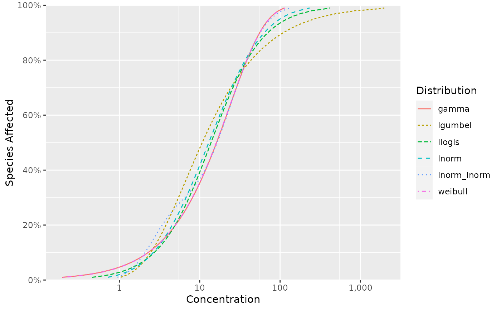

Gets a named list of the estimated values by distribution and term.
# S3 method for fitdists
estimates(x, ...)The object.
Unused.
A named list of the estimates.
fits <- ssd_fit_dists(ssddata::ccme_boron)
estimates <- estimates(fits)
print(estimates)
#> $gamma
#> $gamma$scale
#> [1] 25.12683
#>
#> $gamma$shape
#> [1] 0.9501795
#>
#>
#> $lgumbel
#> $lgumbel$locationlog
#> [1] 1.922631
#>
#> $lgumbel$scalelog
#> [1] 1.232239
#>
#>
#> $llogis
#> $llogis$locationlog
#> [1] 2.626276
#>
#> $llogis$scalelog
#> [1] 0.7404264
#>
#>
#> $lnorm
#> $lnorm$meanlog
#> [1] 2.561645
#>
#> $lnorm$sdlog
#> [1] 1.24154
#>
#>
#> $lnorm_lnorm
#> $lnorm_lnorm$meanlog1
#> [1] 0.9495395
#>
#> $lnorm_lnorm$meanlog2
#> [1] 3.201088
#>
#> $lnorm_lnorm$pmix
#> [1] 0.283985
#>
#> $lnorm_lnorm$sdlog1
#> [1] 0.5545454
#>
#> $lnorm_lnorm$sdlog2
#> [1] 0.7688162
#>
#>
#> $weibull
#> $weibull$scale
#> [1] 23.51397
#>
#> $weibull$shape
#> [1] 0.9660997
#>
#>
ssd_hc(estimates)
#> # A tibble: 6 × 9
#> dist percent est se lcl ucl wt nboot pboot
#> <chr> <dbl> <dbl> <dbl> <dbl> <dbl> <dbl> <int> <dbl>
#> 1 gamma 5 1.07 NA NA NA 1 0 NA
#> 2 lgumbel 5 1.77 NA NA NA 1 0 NA
#> 3 llogis 5 1.56 NA NA NA 1 0 NA
#> 4 lnorm 5 1.68 NA NA NA 1 0 NA
#> 5 lnorm_lnorm 5 1.54 NA NA NA 1 0 NA
#> 6 weibull 5 1.09 NA NA NA 1 0 NA
ssd_plot_cdf(estimates)
